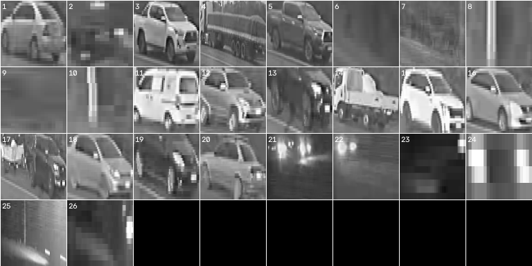

First Principles in Traffic Video Analytics: A Deterministic Engineering Approach to Roadway Monitoring
Executive Summary: For Senior Directors & Project Leaders
Traffic surveys underpin critical infrastructure investments, from highway capacity designs to signal optimization. This article presents a transparent, deterministic approach to traffic video analytics rooted directly in optical geometry and physical ground contact rules.
By measuring vehicles through scale-normalized band geometry, temporal median asphalt modeling, and chronological dual-line verification, the methodology produces auditable, mathematically reproducible traffic counts on standard local hardware. Every passage is paired with an automated Visual Audit Contact Sheet, providing complete transparency for human reviewers.
Prologue: The Foundations of Measurement
In transportation engineering, few tasks are more fundamental than the traffic survey. Before a highway bridge is widened, an industrial bypass is funded, or a signalized intersection is timed, engineers must answer a clear question: How many vehicles passed this cross-section of road, in which direction, at what time, and with what headway?
This paper details how those answers can be derived simply, reliably, and transparently from standard fixed CCTV video by respecting the physical laws of geometry and motion.
"Practical engineering does not require unnecessary complexity. It requires restraint, geometric discipline, and adherence to first principles."
1. The Physical Signal: What is a Vehicle on a Road?
If we strip away computer vision jargon, what is a vehicle crossing a roadside camera’s field of view? It is not an abstract "bounding box class probability vector." It is a physical optical mass with positive ground contact moving across a bounded pavement plane over time.
From this first principle, three physical truths emerge:
- The Road Has Geometry: A roadway is physically bounded by near and far edges. Perspective distortion dictates that an object far away occupies fewer vertical pixels than an identical object nearby.
- The Asphalt is Static, Traffic is Dynamic: Pavement color and texture remain stable over minutes, while vehicles arrive, occlude, and depart.
- Motion is Directional and Chronological: A vehicle traveling eastward must break line A before line B. A tree shadow oscillating in the wind swings across both lines simultaneously or erratically.
2. Perspective Invariance: The Local Optical Band Height $H(x)$
Standard cameras view highways under oblique perspective angles. A compact sedan near the camera may appear 180 pixels tall, while a large freight truck in the background appears only 65 pixels tall. Traditional systems attempt to bridge this with arbitrary minimum/maximum pixel area thresholds—leading inevitably to missed detections in the distance and false triggers in the foreground.
The quantity $H(x)$ defines the local optical scale of the roadway. Every single threshold in the pipeline—from minimum blob area and tracking centroid tolerance to morphological kernel dimensions and coupling clearances—is defined not in fixed pixels, but as a scale-normalized fraction of $H(x)$:
The Plain-English Analogy: Think of an artist sketching railroad tracks converging toward the horizon. You never measure the height of a passing train in inches on the canvas; you measure it relative to the spacing between the rails at that exact spot. By measuring objects in "road widths" rather than raw pixels, a distant truck and a nearby sedan are judged on the exact same scale.
3. Why Gaussian Mixture Models Fail at Red Lights
Many standard computer vision packages rely on Gaussian Mixture Models (GMM) with dynamic learning rates ($\alpha$) for background subtraction. In fluid, highway-speed traffic, GMMs appear effective. However, consider what happens when traffic queues form at a red light:
- A line of cars comes to a complete standstill for 90 seconds.
- With a standard learning rate $\alpha = 0.005$, the GMM gradually absorbs the stationary vehicles into its background model.
- When the green light turns and vehicles accelerate away, the system registers "ghost" negative blobs where the cars used to be, corrupting downstream counts for minutes.
By sampling 60 to 120 uniformly spaced frames across a temporal window, the median operator guarantees that as long as vehicles occupy a given patch of road for less than 50% of the sample duration, the true asphalt intensity is mathematically recovered with zero vehicle ghosting. Stopped traffic is never memorized.
The Plain-English Analogy: Consider a tourist photographer in front of a historic fountain. If they take a 5-minute long-exposure photograph, people walking past completely blur away, leaving only the stationary fountain. The temporal median operator does the same thing mathematically: vehicles vanish, leaving clean pavement.
4. Eliminating False Triggers: The Chronological Two-Line Gate
A single virtual tripwire across a road is notoriously fragile: telephone pole shadows swing in afternoon gusts, passing clouds trigger false counts, and high-beam headlights trigger the line seconds before the physical bumper arrives.
To eliminate these artifacts without resorting to heavy deep learning, we implement a Chronological Dual-Line Verification Protocol:
A valid passage requires an optical mass to break the Counting Line at $t_1$, and subsequently break the Verification Line at $t_2$. Oscillating shadows fail this condition because they reverse direction or cross both lines simultaneously.
The Plain-English Analogy: Like a dual-door airport security airlock. You cannot enter the secure zone unless you pass Door 1 and then Door 2 in forward chronological order. Swaying shadows hit both lines at once or flip back and forth; only an actual moving vehicle triggers both lines in forward sequence.
5. Solving the "Ghost Semi-Trailer": In-Frame Articulated Coupling
One of the most persistent failure modes in automated traffic counting is the articulated freight truck. When a tractor pulls a 53-foot semi-trailer, there is a physical gap above the fifth wheel where the roadway behind the vehicle is visible.
Under oblique CCTV angles, standard bounding-box detectors register the cab as Vehicle 1 and the trailer body as Vehicle 2, reporting two consecutive vehicles traveling at 60 km/h with an impossible headway of $0.35\,\text{seconds}$.
Before a pass timestamp is ever generated, the tracker inspects the physical relation of the two blobs in the frame: do both blobs share identical pavement grade contact ($y_{\text{bottom}}$), and is the optical gap between them smaller than physical fifth-wheel hitch clearances? If both hold, the cab and trailer are welded into a single unified entity in the frame.
The Plain-English Analogy: A semi-truck has a hitch gap between the tractor cab and the trailer. Naive vision models see two vehicles tailgating each other impossibly close. By confirming that both pieces sit on the same tire line and their gap matches a mechanical hitch, software welds them into a single commercial truck.
6. The 4 Non-Negotiable Engineering Validation Gates
A pipeline will always report numbers, whether or not those numbers represent reality. In civil engineering, an unverified number is worse than no number at all. traffic-stats-kit enforces 4 automated validation gates:
| Gate | Engineering Criterion | Safety & Integrity Purpose |
|---|---|---|
| 1. Visual Audit | 100% of tiles on contact_sheet.png | Human reviewer inspects crop of every counted vehicle |
| 2. Headway Floor | $h_i < 1.0\,\text{s}$ must be $\le 5\%$ | Flags unmerged tractor-trailer combinations |
| 3. Coverage Continuity | Valid footage $> 95\%$ | Ensures peak hour volume is not corrupted by gaps |
| 4. Bit Determinism | Exact CSV row matching | Guarantees mathematical reproducibility across runs |

Epilogue: Restraint as an Engineering Principle
In engineering, true elegance is found when the methodology matches the simplicity of the physical problem.
A camera is a sensor of light. A road is a geometric plane. A vehicle is an optical mass traveling in time. When software respects those physical realities, counting traffic becomes a straightforward, reliable task of geometry, clean mathematics, and the disciplined judgment of a human in the loop.
📥 Access Verified Sample Datasets & Test Videos
Sample multi-gigabyte video clips and ground-truth verification benchmarks are hosted on high-speed cloud mirrors. Complete the brief Practitioner & Industry Profiler to unlock direct access passes to the Google Drive and OneDrive mirrors:
📋 Complete Profiler & Unlock Google Drive →